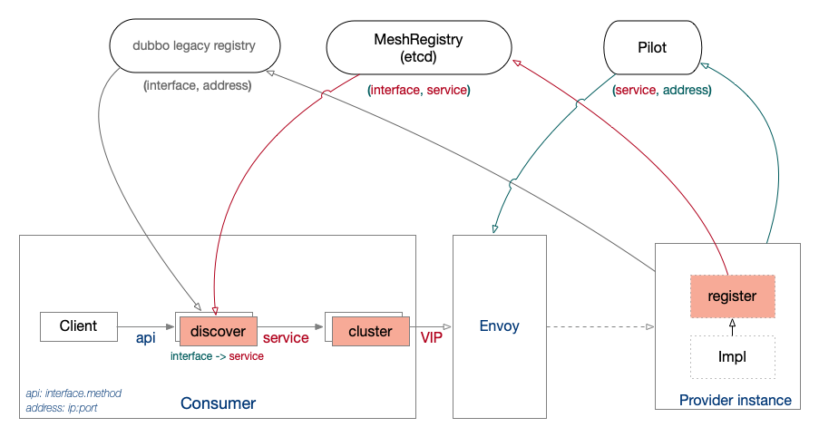

Dubbo 集成 Istio 的方案
Dubbo 是个流行的微服务框架，其功能和ServiceMesh有一定重合。在将Dubbo逐步迁移到Istio架构时，有一些问题需要解决。 其中，服务注册与发现是服务间调用的核心问题，融合两者的服务注册与发现机制是实现Dubbo向Istio迁移的关键步骤。 在研究Dubbo框架的原理及使用方式之后，本文提出了一种扩展Dubbo的方式，使其更容易地集成到service mesh （istio）中。
名词解释
文中用到的名词按下面的意思进行约定，方便理解。
-
Consumer, Provider
在Dubbo生态中，服务间调用常常用Consumer和Provider分别指代服务调用方和服务提供方。
-
address
表示网络连接地址，格式位
IP:PORT
Dubbo如何实现服务发现？
-
通过扩展机制，Dubbo支持使用 zookeeper、consul、etcd 等作为注册中心。并且同时支持多个注册中心
<dubbo:registry id="registry-foo" address="etcd3://${etcd3.address:127.0.0.1}:2379" /> <dubbo:registry id="registry-bar" address="zookeeper://${zookeeper.address:localhost}:2181" /> <bean id="demo-service" class="org.apache.dubbo.samples.impl.DemoServiceImpl"/> <dubbo:service interface="org.apache.dubbo.samples.api.DemoService" ref="demo-service" registry="registry-foo"/>上面是Provider的配置定义了两个注册中心,
registry-foo使用 Etcd，registry-bar使用Zookeeper。<bean .../>定义了一个服务demo-service，该服务通过<dubbo:service ... />注册到registry-foo中。 -
服务注册/发现粒度是interface级别
interface级别的服务发现为用户提供了非常便利的使用方式，用户只需要用Java语言定义好接口类型，通过配置文件将服务进行声明注册，即可在业务程序中直接调用，整个过程和本地方法调用区别不大。
接口定义文件（一般在Provider和Consumer之间进行共享）
//service interface definition public interface DemoService { String sayHello(String name); }Consumer使用方式：
//usage void main(String[] args) { DemoService demoService = (DemoService) context.getBean("demoService"); System.out.println(demoService.sayHello("world")); } //config <dubbo:reference id="demoService" scope="remote" check="true" interface="org.apache.dubbo.samples.api.DemoService" loadbalance="roundrobin" />例如，服务端在注册中心会用下面的格式记录接口实例的详细信息：
/dubbo/org.apache.dubbo.samples.api.DemoService/providers/http://10.35.4.53:8080/org.apache.dubbo.samples.api.DemoService?anyhost=true&application=provider-demo&deprecated=false&dubbo=2.0.2&dynamic=true&generic=false&interface=org.apache.dubbo.samples.api.DemoService&methods=sayHello&pid=91302&release=2.7.5&server=tomcat&side=provider×tamp=1591344245234
Dubbo服务发现示意图：

问题与方案
用户在迁移到service mesh过程中，Consumer将出现两种情况：
-
Consumer未改造，继续使用Dubbo SDK内部组件访问Provider；
对于这些还未迁移的服务，需要保留Dubbo已有的服务注册/发现机制，Dubbo服务间使用Pod IP进行通信，不需做其它改造，这样我们可以进行平滑迁移。
-
改造过的Consumer（用
Consumer[sidecar]表示）通过sidecar访问Provider；Consumer[sidecar]访问Provider时，情况变得稍微复杂一些：-
被访问的Provider还未使用Istio进行治理，Consumer继续使用Dubbo SDK进行服务发现。
虽然sidecar虽然会拦截所有流量，但不会对未进行治理的流量做任何处理。为了消除不必要的性能损失，也可通过对Provider规划不同的端口，使用excludeOutboundPorts来避免劫持访问Provider的流量。
-
被访问的Provider使用Istio进行治理，Consumer不能再按照原来的方式来进行服务发现。
Istio的服务发现粒度是应用级别，而不是接口级别，我们需要对两种模型进行融合，并且尽量减少上层业务的感知。 另外，服务发现的过程移动到了Envoy进程中，Dubbo SDK发出的流量需要与Envoy中的服务发现机制相匹配。
-
被访问的Provider部份使用Istio进行治理
在一个大型服务迁移过程中出现，可能一部分流量通过SDK访问，另一部分流量通过sidecar进行访问。这种场景较复杂，一种比较直接的解决方案是把同一个服务在逻辑上拆分未两个服务，一个服务通过Istio进行治理，另一个保持原样， 这样便可将其归结前面两种情况进行处理。在渡过这种迁移状态之后，便可重新归为同一个服务进行处理。
-
总体来说，我们需要在Dubbo上提供一种应用/服务级别的注册/发现机制，并且能与Dubbo兼容。
Dubbo使用Java interface描述RPC接口，这和基于schema的第三方IDL相比，其易用性好得多，即使迁移到Istio进行服务治理，这种风格也会继续保留在Dubbo生态中。
因此，我们在服务发现的过程中，将不得不面临 interface -> Service -> Address 的转换问题，这与 Service -> Address 的转换相比，多了 interface -> Service 的转换步骤。
Dubbo具有高可扩展性，我们可以通过扩展Registry组件来实现这一点（命名为MeshRegistry)：
- 在Provider中将
(interface, service)注册到MeshRegistry； - 通过kubernetes service 将 Provider 自动注册到Pilot；
- Consumer侧通过MeshRegistry的Dubbo扩展进行接口级别的服务发现，将 api(interface.method) 映射为service；
- Consumer Pod的sidecar进行服务发现，将service转换为addresss，访问Provider；
下图展示了融合Istio和Dubbo之后的服务注册/发现机制：

多注册中心
为什么不使用Pilot作为单独的服务注册中心？
前面提到，Dubbo易用性的关键之一是interface级别的服务注册/发现，Pilot提供的数据模型无法保存 interface -> service 这样的映射关系，同时xDS模型适配到Dubbo的服务发现流程中也比较复杂。
方案中保留Dubbo的原来注册/发现机制，以兼容未纳入mesh管理的Dubbo服务，这些服务可以按原方式调用。 MeshRegistry在逻辑上与 Dubbo Legacy Registry 独立，但在部署上可以采用同一个Etcd集群来实现，降低维护代价。
服务端（Provider）服务注册
在服务端，我们通过Dubbo Registry扩展组件，可以实现自定义的register流程。
对于Dubbo的注册机制来说，这些服务是自描述的，它们在内部感知到IP等信息，将其提交到注册中心。
对于MeshRegistry注册中心需要的 interface -> service 映射关系，register需要感知到外部引用它（即运行Dubbo服务的Pod）的service名字，
然而，register并没有简单的办法从环境中获取到service名字信息，即使通过kubernetes api中查询到引用Pod的service信息，也会面临一个Pod被多个service引用的情况，
这时候没有办法自动确定究竟是哪个service才是Mesh使用的service，最终，它会影响Consumer如何与sidecar(Envoy)建立通信连接。
有两种注册方案：
-
通过kubernetes定义service时，打上annotation标记，如
dubbo/interface: demo-service，这样register便可以查询kubernetes service，提取annotation完成注册。这种方式将interface与service的关系放在kubernetes集群中进行，并且Consumer还是需要进行一些配置上的改造，可能使用不方便。
我们也可以去掉Dubbo register扩展，通过kubernetes operator监听service和pod的生命周期来完成注册，但这种方式存在可用性问题：pod销毁时operator未及时通知MeshRegistry，Consumer侧还会继续转发流量。
-
在Dubbo配置中增加service信息，扩展的register组件从Dubbo配置中读取后进行注册
Dubbo存在application概念，可以利用这个概念，将其等同于service，不需要改造Dubbo即可实现：
<dubbo:application name="demo-srv" /> <dubbo:service class="org.apache.dubbo.samples.impl.DemoServiceImpl" interface="org.apache.dubbo.samples.api.DemoService" registry="mesh-registry" application="demo-srv"/>上面的配置定义了一个 <dubbo:application />，name设定为
demo-srv，然后定义了一个dubbo:service，引用demo-srv。 我们可以在register扩展插件中将demo-srv属性提取出来，注册到 MeshRegistry中。这样，我们便可再定义一个
demo-srv的kubernetes service，即可在两个服务注册中心记录下足够的对应信息。
这两种方案各有利弊，对用户来说，第2种方案更容易理解，并且Dubbo内部的细节不需要暴露到外部管理流程中，是比较好的方案。
客户端（Consumer）服务发现
客户端会进行两级服务发现：在Dubbo内将interface映射为service，Dubbo再访问service被sidecar拦截，完成最后 service->address 映射。
服务发现扩展（discover）中完成 api(interface)->service 的映射动作后，需要通过cluster扩展，将其目的地址修改为service。
在这里，我们可以借助kube-DNS完成service的IP地址转换，而不需要在cluster中手动解析。
下面是Consumer侧可能的配置：
<dubbo:registry id="mesh-registry" address="mesh://${etcd3.address:127.0.0.1}:2379" register="false" />
<dubbo:reference id="demoService" registry="mesh-registry" cluster="sidecar" scope="remote" check="true" interface="org.apache.dubbo.samples.api.DemoService" />
我们增加了一种类型为mesh的服务发现扩展（ mesh://... ），同时增加了一种称为 sidecar 的cluster类型，引用的服务接口通过 interface="org.apache.dubbo.samples.api.DemoService" 指定。通过这些配置，Consumer业务代码不需要做什么改造即可接入。
模块组件
- 服务注册/发现组件（RegistryMesh），供Consumer和Provider使用。
- Cluster组件（sidecar），供客户端使用；
两个组件都是对Dubbo的扩展，使用Java开发，用户不需要修改已有的Dubbo框架，只需要引用这些扩展组件。为了保持易用性，需要长期进行维护，甚至与社区合作，将其纳入官方库。
社区发展
Dubbo 3.0 也在进行升级改造，核心是将interface级别的服务发现控制在Dubbo内部，提供App概念来更好地适配云原生生态（app概念等同于本文中描述的service概念）。
社区方案中要解决的核心问题也是完成 interface->app 映射，计划通过实例间协商完成（社区称之为自省）。
这个方案将改造registry模型，但对上层业务代码没有影响，与Istio结合同样还会遇到注册模型的差异问题。本文提出融合方案与社区发展没有冲突。
参考资料
Dubbo 迈出云原生重要一步：应用级服务发现解析 https://www.infoq.cn/article/GUvBbu5Mbv5uXfj1lLrL